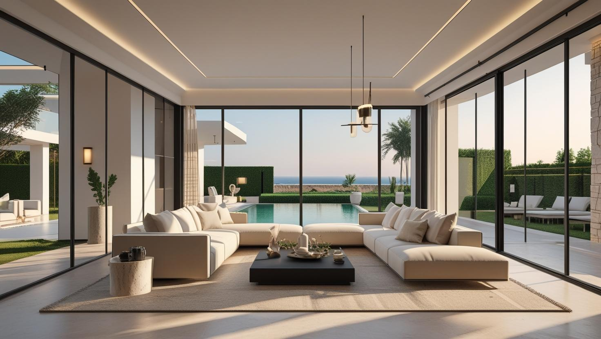
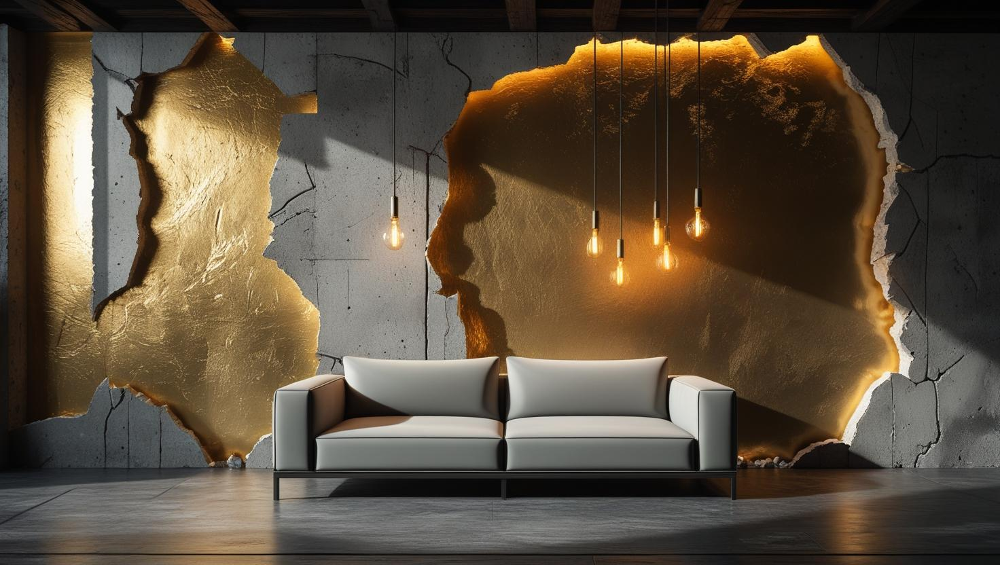

Zekeriyaköy Profesyonel Boya Ustası
Zekeriyaköy ve Uskumruköy'de villa, site içi konut ve modern yaşam alanlarınız için doğayla uyumlu, estetik ve kaliteli boya çözümleri sunuyoruz.
Zekeriyaköy'de Boya Badana: Villa Siteleri ve Geniş Yüzeyler
Zekeriyaköy boyacı talebi Sarıyer'e bağlı bu semtin villa ve müstakil ev ağırlıklı yapısını yansıtıyor. Yapı stoğu ağırlıkla site içinde, geniş yüzeyli ve çoğu zaman yüksek tavanlı.
Villa işlerinde kapsam iç cephe ile sınırlı kalmıyor: dış cephe, bahçe duvarı ve ahşap doğrama da gündeme geliyor. Geniş yüzey ve yüksek tavan, boyanacak alanı zemin metrekaresinin belirgin biçimde üzerine çıkarıyor.
Ormanlık dokuya yakınlık nedeniyle nem yükü yüksek; gölge alan cephelerde yeşillenme eğilimi görülebiliyor. Zekeriyaköy boya ustası keşfinde cepheleri yönlerine göre değerlendiriyoruz.
Zekeriyaköy Villa Boyama Hizmetlerimiz

Villa & Konut İç Cephe Boyama
Villanızın iç cephesini doğal ışığı yansıtan sade ve modern tonlarla boyayarak ferah ve huzurlu bir görünüm kazandırıyoruz.
- Geniş ve yüksek tavan uzmanlığı
- Doğal ve sıcak renk paleti danışmanlığı
- Pürüzsüz yüzey hazırlığı ve uygulama
- Sağlıklı, çevre dostu boya seçenekleri

Dış Cephe & Ahşap Bakımı
Villanızın dış cephesini ve değerli ahşap detaylarını bölgenin iklim koşullarına karşı koruyoruz.
- UV ve neme dayanıklı dış cephe boyaları
- Ahşap ve kompozit yüzey koruma
- Peyzajla uyumlu renk harmonisi
- Uzun ömürlü ve estetik çözümler

Country & Dekoratif Boya
Mekanınıza sıcaklık ve özgün bir karakter kazandıran, doğadan ilham alan dekoratif boya uygulamaları.
- Doğal dokulu sıva ve efektler
- Sıcak ve pastel renk tonları
- Country ve rustik tarz uygulamaları
- Belirlenen renk planına göre boya uygulaması
Zekeriyaköy'de Villa Boyarken Önem Verdiklerimiz
Zekeriyaköy & Çevre Uzmanlığı
Bölgenin mimarisine, sitelerin çalışma kurallarına ve beklentilerine tam hakimiyet
Titiz & Disiplinli İşçilik
Söz verdiğimiz sürede, peyzajınızı koruyarak, temiz bir şekilde işi teslim ederiz
Premium Malzeme Kalitesi
Villanızın değerini koruyan en sağlıklı ve en kaliteli boya markalarıyla çalışırız
Güvenilir & Referanslı Ekip
Mahremiyetinize önem veren, sigortalı ve profesyonel ustalardan oluşan ekip
Doğaya ve Çevreye Saygı
Çalışmalarımızda doğaya duyarlı, düşük VOC'li ve çevre dostu malzemeler
Memnuniyet odaklı çalışma
Villa teslimlerinde rötuş ve temizlik kontrolünü sizinle birlikte yapıyoruz
Zekeriyaköy Boyacı Ustası: Doğayla Bütünleşen Zanaat ve Kalite
İstanbul'un sakin ve yeşil vahası Zekeriyaköy'de boyacı ustası hizmetimiz, modern mimariyi ve doğal yaşamın estetiğini anlayan özel bir yaklaşım sunar. İstanbul Boyacılık olarak biz, Zekeriyaköy ve Uskumruköy'deki seçkin villaların, prestijli sitelerin ve country tarzı yaşam alanlarının kendine has ruhunu biliyoruz. Amacımız, Zekeriyaköy villa boyama projelerinde iç ve dış cephe boyasını evinizin doğal çevresiyle uyumlu renklerde, sağlıklı ve uzun ömürlü biçimde uygulamaktır.
Zekeriyaköy Boya Fiyatları
| Hizmet Türü | Metrekare Fiyatı | Ortalama Süre (150m²) | Garanti |
|---|---|---|---|
| Villa İç Cephe Boyama | 180-350 TL | 3-5 Gün | Uygulama kapsamına göre |
| Villa Dış Cephe Boyama | 200-450 TL | 5-10 Gün | Uygulama kapsamına göre |
| Dekoratif & Country Boya | 350-700 TL | 4-7 Gün | Uygulama kapsamına göre |
| Ahşap Bakım ve Boyama | Fiyat Keşif Sonrası | Değişken | Uygulama kapsamına göre |
Metrekare fiyatları yaklaşık ön değerlendirme aralığıdır. Uygulanacak ölçüm yöntemi, boyanacak alanın kapsamı, yüzey durumu, tamirat ihtiyacı, kat sayısı ve malzeme seçimi keşif sırasında netleştirilir.
Uygulama kapsamına göre işçilik garantisi sağlanır. Garanti kapsamı ve istisnaları teklif veya iş sözleşmesinde belirtilir.
Bu rakamlar İstanbul Boyacılık'ın 2026 gösterge fiyat aralığıdır. Bir piyasa ortalaması değildir. Kesin fiyat; yüzey durumu, hazırlık ve tamirat miktarı, uygulanacak kat sayısı, seçilen malzeme sınıfı, ulaşım ve kat koşulları ile evin eşyalı mı boş mu olduğu keşifte görüldükten sonra belirlenir.
Zekeriyaköy'de kapsamı büyüten kalemler geniş yüzey ve yüksek tavan, dış cephenin devreye girmesi, gölge cephelerde çıkan temizlik işi ve site yönetiminin çalışma kuralları.
Zekeriyaköy ve Çevresinde Hizmetinizdeyiz
Zekeriyaköy boyacı ustası olarak Zekeriyaköy'de ve kuzey İstanbul'daki komşu semtlerde hizmet veriyoruz:
Hizmet Verdiğimiz Yakın Bölgeler
- Zekeriyaköy
- Uskumruköy
- Bahçeköy
- Sarıyer (Merkez & Köyler)
- Maslak
- Tarabya (Villalar)
- Kemerburgaz
- Göktürk
- Demirciköy
- Gümüşdere
- Kilyos
- Arıköy
Faydalı Bağlantılar
Zekeriyaköy bölgesinde premium iç cephe veya dekoratif boya planlıyorsanız fiyat, metrekare hesabı ve marka seçimi rehberlerini birlikte incelemek daha sağlıklı karar verir.
Sıkça Sorulan Sorular
Zekeriyaköy'de villa iç ve dış cephe boyası, ahşap yüzeyler ve site kurallarına dair sorular
Bazı villa sitelerinde cephe, çatı ve bahçe duvarı renklerinin bütünlüğü yönetim planıyla korunuyor; bu durumda yeni renk için yönetimin onayı gerekebiliyor. İç mekân boyası genellikle bu kapsama girmiyor. Keşiften önce sitenizdeki cephe rengi kuralını öğrenmenizi, varsa onaylı renk kodunu bizimle paylaşmanızı öneriyoruz.
Evet, ahşap yüzeyler de iş kapsamına alınabiliyor. Önce ahşaptaki mevcut vernik ya da boyanın durumu kontrol ediliyor; parlak eski katman zımparayla matlaştırılmadan yeni kat iyi tutunmuyor. Ahşabın dokusunun görünmesini istiyorsanız renkli koruyucu ya da vernik, tamamen örtmek istiyorsanız astar üzerine ahşaba uygun boya uygulanıyor.
Bu tür dokuları şömine duvarı, giriş holü ya da merdiven boşluğu gibi göze ilk çarpan tek bir yüzeyde kullanmanızı öneriyoruz; salonun tamamına uygulandığında mekân ağır görünebiliyor. Keşifte duvarın düzgünlüğüne ve aldığı ışığa bakarak hangi dokunun uygun olacağını sizinle birlikte değerlendiriyoruz.
Evet, iç mekanlarda VOC değeri sıfıra yakın, kokusuz, antialerjik, çocuk ve evcil hayvanlar için güvenli, çevre dostu sertifikalı premium boya markalarıyla çalışıyoruz.
Villa boyamada iç ve dış cephe birlikte planlanabilir mi?
Planlanabiliyor ve ekip açısından avantajlı; kurulum tek defa yapılıyor. Ancak dış cephe hava koşullarına bağlı olduğu için iki işin takvimi her zaman üst üste gelmeyebiliyor.
Geniş yüzeyli villada süre nasıl hesaplanıyor?
Zemin metrekaresi değil, ölçülen yüzey alanı esas alınıyor. Yüksek tavan ve geniş açık hacimler platform ve ek süre gerektiriyor. Keşifte yüzeyi ölçüp gün sayısını buna göre veriyoruz.
Site içinde çalışma saatleri kısıtlı mı?
Çoğu villa sitesinde çalışma saatleri ve giriş kuralları var. Randevu öncesinde bunu sizden öğrenip planı ona göre kuruyoruz.
Zekeriyaköy Müşteri Yorumları
"Zekeriyaköy'deki villamızın dış cephe ahşapları ve duvarları için İstanbul Boyacılık ile anlaştık. Ekibin hem site kurallarına uyumu hem de peyzajımızı korumadaki hassasiyetleri harikaydı. Sonuç, doğayla bütünleşik ve çok şık oldu."
Banu Öztürk
Zekeriyaköy / İstanbul
"İç mekan boyaması için referans üzerine ulaştık. Renk seçimi konusunda çok yardımcı oldular. Kokusuz ve sağlıklı boyalar kullanmaları çocuklu bir aile olarak bizim için çok önemliydi. Temiz ve hızlı bir hizmetti."
Ali Can Yücel
Zekeriyaköy / İstanbul
"Uskumruköy'deki bir proje için çalıştık. Ekibin projeye sadakati, pürüzsüz yüzey hazırlığı ve detaylardaki titizliği bir mimar olarak beni çok memnun etti. Güvenilir bir çözüm ortağı."
Mimar Kerem Aslan
Uskumruköy / İstanbul
İletişim
İşletme merkezi: Orta, Demirkapı Cd. No:1, 34030 Bayrampaşa/İstanbul
İşletme merkezini Google Haritalar’da görüntüleyin
İletişim Bilgileri
Telefon: 0507 832 29 12
E-posta: boyaustamistanbul@gmail.com
10+ Uzman Ustamızla Zekeriyaköy ve tüm İstanbul'a hizmet veriyoruz
Çalışma Saatleri: 7/24 (Pzt-Paz 00:00-23:59)